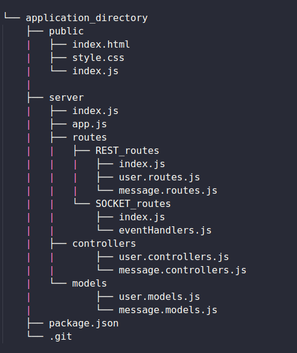

You are now connected to the socket.
Connected sockets:
Your socket id is:
Chat
## Introduction
A CLI to quickly create a basic set-up for applications using Express and Socket.io.
The backend is based on NodeJS with [express] and [socket.io].
The frontend consists of a simple landing page with HTML, CSS and JS and [socket.io-client].
## Requirements
Node v7.6.0 or higher for ES2015 and async function support.
## Installation
To make the package available in the shell as standalone command, it requires a global installation: npm install -g express-socket-io-boilerplate
## Getting Started
The package installs the required folder structure along with package.json, dependencies and an empty git repository.
Command to create an express and socket.io boilerplate in the current directory: express-socket-io-boilerplate
## Folder Structure
The express-socket-io-boilerplate generates the following folder structure:
## Commands
From the server directory run nodemon to start the server.